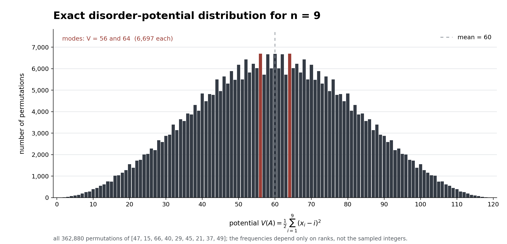

Abstract. The first paper bounds the cost of one search when an array’s rank-displacement potential is at most \(E\); the second considers repeated searches and a reusable index. Here we put that budget in context for a uniformly random permutation. Exact enumeration at \(n=9\) illustrates the distribution, while exact moments and a tail bound show that a typical uniform shuffle lies beyond the point where the potential-only displacement bound narrows the search window.
Potential under uniform shuffling
Let \(\pi=(\pi_1,\ldots,\pi_n)\) be a uniformly random permutation of the ranks \(1,\ldots,n\). The values of the underlying distinct keys do not matter. Their disorder potential is \[V_n(\pi)=\frac12\sum_{i=1}^n(\pi_i-i)^2 =\sum_{i=1}^n i^2-\sum_{i=1}^n i\pi_i.\] Since \(\mathbb E\pi_i=(n+1)/2\), \(\operatorname{Var}(\pi_i)=(n^2-1)/12\), and \(\operatorname{Cov}(\pi_i,\pi_j)=-(n+1)/12\) for \(i\ne j\), \[\mu_n=\mathbb E V_n=\frac{n(n^2-1)}{12},\qquad \sigma_n^2=\operatorname{Var}(V_n)=\frac{n^2(n-1)(n+1)^2}{144}.\] Complementing every rank gives an exact pairing: \[V_n(\pi)+V_n(n+1-\pi)=\frac{n(n^2-1)}6=2\mu_n.\] Thus the finite distribution is symmetric about its mean. It need not be exactly normal: at \(n=9\) it has two modes. A combinatorial central limit theorem for permutation sums gives \((V_n-\mu_n)/\sigma_n\Rightarrow N(0,1)\) as \(n\) grows. For a fixed tail probability \(\delta\), a normal approximation suggests \(E_\delta\approx\mu_n+\sigma_n\Phi^{-1}(1-\delta)\), where \(\Phi\) is the standard normal distribution function. Exact counts are preferable in small samples and in the tails.

What the distribution says about search
The first paper proves that a supplied promise \(V(A)\le E\) gives tight worst-case one-search cost \[Q^*(n,E)=\Theta\!\left(\log n+\min\{n,\sqrt E\}\right).\] The repeated-search note gives the upper bound \[\begin{aligned} T_q^*(n,E)&=O\!\left(q\log n+ \min\{qR_E,\,n\log(R_E+1),\,n[1+\log(1+E/n)]\}\right),\\ R_E&=D_E+1, \end{aligned}\] where the displacement certificate implied by the promise is \[D_E=\min\left\{n-1, \left\lfloor\frac{\sqrt{1+8E}-1}{2}\right\rfloor\right\}.\] The distribution of \(V_n\) tells us what fraction of uniform shuffles a chosen \(E\) covers. Coverage is not a certificate for an individual input: its promise must be supplied or verified, and verification comparisons must be counted.
The displacement certificate saturates at \(D_E=n-1\) when \(E\ge E_{\mathrm{sat}}=n(n-1)/2\). Yet \(\mu_n\sim n^3/12\) while \(E_{\mathrm{sat}}\sim n^2/2\). For \(n>5\), Chebyshev’s inequality makes the asymptotic separation explicit: \[\Pr(V_n<E_{\mathrm{sat}}) \le \frac{\sigma_n^2}{(\mu_n-E_{\mathrm{sat}})^2} =\frac{(n+1)^2}{(n-1)(n-5)^2}=O(1/n).\] At \(n=9\), \(E_{\mathrm{sat}}=36\) and the exact fraction below it is \(48{,}913/362{,}880\approx13.5\%\). The low-disorder cases that receive a narrower window from this scalar certificate become rare under uniform shuffling. Search gains for typical inputs therefore call for a distribution favoring near-sorted arrays or a more informative description of where their disorder lies.
Reproduction. The experiment README, exact counts, and enumeration script accompany this note.